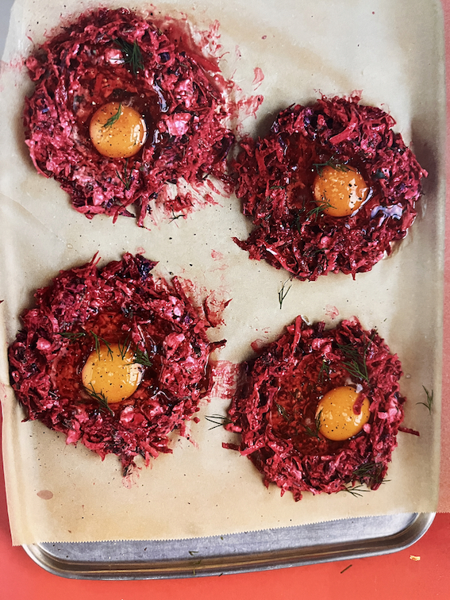

Beetroot Baked Eggs

Description
This dish is grated celeriac and beetroot with feta, yoghurt and spices,
baked in the oven with an egg
Ingredients
- 180g fresh beetroot
- 180g celeriac
- 3 tablespoons chopped dill
- 180g natural yogurt
- 1.5 tablespoons lemon juice
- 180g feta
- 4 eggs
Steps
- Preheat oven to 180° C
- Mix together the grated beetroot, celeriac, dill yogurt, lemon juice and
feta with a grind of black pepper
- Divide into 4 on a baking tray and make a small divet in the middle of all 4
- Place and egg in each of the 4 divets. Place in the oven for 8-10 minutes or until
the eggs are fully baked